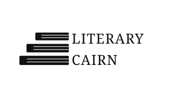

About Literary Cairn
Literary Cairn may sound like something ancient and solemn—perhaps a carefully stacked monument of stones on a windswept hill, marking stories meant to endure. The name was chosen with that image in mind: a place where tales are gathered, preserved, and offered to those who pass by.
In truth, Literary Cairn is something a little more modest. It is a small, independent publishing imprint created to bring my own fantasy romance books into the world. Every story published under this name is one I have written myself, shaped over time and care, and carried here to be shared with readers.
It may not be a grand institution—but it is a cairn nonetheless, built one story at a time.